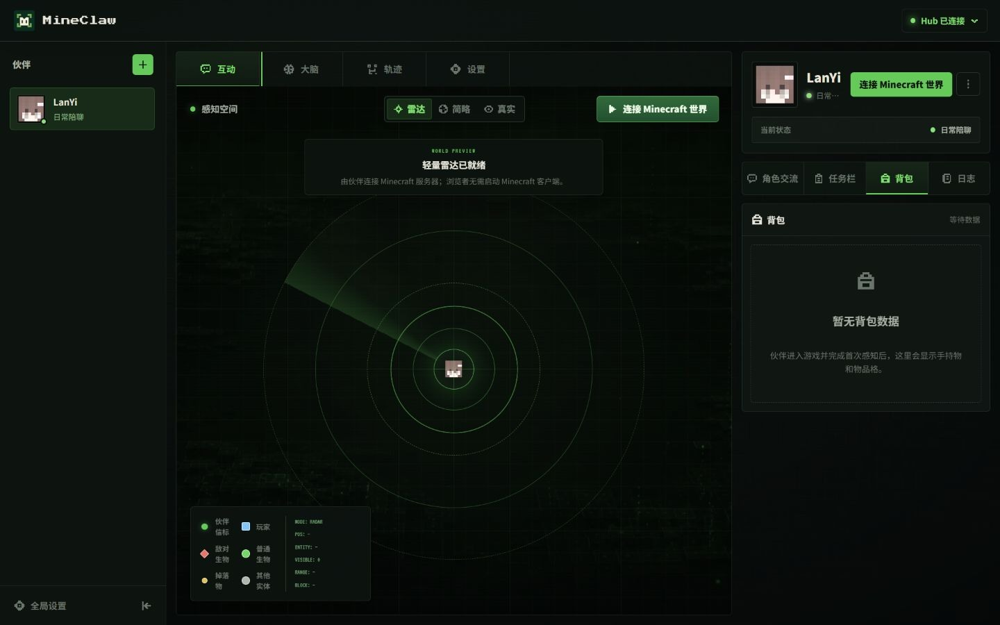

人 × AI / CO-CREATION
在彼此的
思考里
生长。
让人的直觉，与 AI 的推演相遇。
在相互启发中，共同创造。
01 / PROFILE
保持好奇，
慢慢创造。
我是云上男孩。这里放着我关于游戏、AI、视觉和硬件的作品与创作记录。
- 游戏
- 深空 · Titan Town
- 工具
- MineClaw · AgentMem
- 视觉
- 动态壁纸工作坊 · Shader 实验
- 硬件
- Haimian · 深空外设 / ClawPhone
CLOUD BOY
CREATOR ARCHIVE / 01
CREATOR ARCHIVE / 01
04 / SELECTED WORKS
做出来的想法。
精选作品暂时未载入。你仍可浏览下方的作品列表。
共 17 件作品





AI Wallpaper Workshop
包含蓝天湖景列车、星空列车两个运行案例，以及分层制作、质量检查与离线导出的两份 Skill。提供 TA 拆解、Shader 实现和本地运行文档。


Hades 学习 Demo · 冥界试炼
基于 Godot 的三房间动作游戏学习 Demo，包含战斗、奖励与祝福选择、Boss 波次及胜负结算。提供 Windows 版本和中文游戏界面；项目非官方，仅限非商业学习。


Video to Game Animation
面向 Agent 的视频参考转游戏角色动画 Skill，包含姿态估计、动作重定向、步态协调、蒙皮诊断和 Blender 复验。提供脚本、修订对比与测量数据，需结合具体角色配置和验证。

暂时没有找到
换个关键词，或试试其他分类。
02 / JOURNAL
创作的途中。
从一个念头，到可以运行的作品。
05 / SIGNALS
来自外面的信号。
按日期收藏，持续发现。
这期新闻暂时未能载入，请重试。
INSIDE THE CREATIVE WORLD
想法，
有自己的世界。
01 / 06
05 / STAY CURIOUS
继续聊聊，
继续创造。
关于游戏、AI 工具、视觉设计与硬件的创作与探索。
GitHub / Be1Human ↗创作手记 / Journal ↗科技新闻 / Signals ↗Agent 学习 / Learning ↗查看全部作品 →